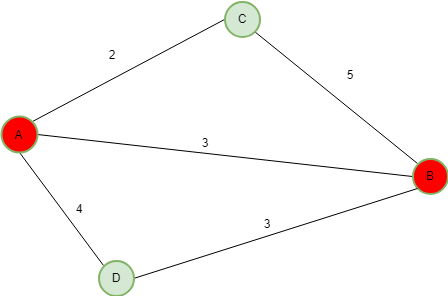
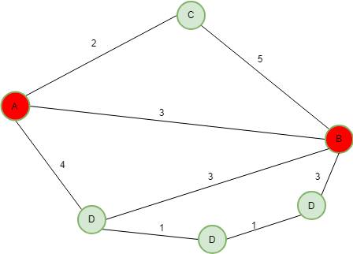

在网络和路由的情况下，数据传输操作是一个至关重要的方面。 因此，必须以最低的硬件成本（光缆，WDM网络组件，解码器，多路复用器）以及尽可能短的时间进行高效的数据传输操作。 因此，需要提出一种算法，该算法找到两个节点（源节点和目的节点）之间的最短路径。
让我们看一个全新的算法，不同于Dijkstra的最短路径或任何其他寻找最短路径的算法。
给定一个图形和两个节点（源节点和目标节点），找到它们之间的最短路径。 
让我们计算每个链接的距离比率：
链路AB的距离[由
d(AB)表示] = 10
链路AC的距离[由d(AC)表示] = 12对于链路AB ，距离比AB = d（AB）/（d（AB）+ d（AC））
对于链路AC ， AC的距离比= d（AC）/（d（AB）+ d（AC））
算法：
Given a graph and two nodes - 1. Find all the paths connecting the two nodes. 2. For each path calculate probability = (Distance Ratio). 3. After looping over all such paths, find the path for which the probability turns out to be minimum.
例子 ：
Input :  Output : Shortest Path is [A -> B] Explanation : All possible paths are P1 = [A->B] P2 = [A->C->B] P3 = [A->D->B] total distance D = d(P1) + d(P2) + d(P3) = (3) + (2 + 5) + (4 + 3) = 17 distance ratio for P1 = d(P1) / D = 3/17 distance ratio for P2 = d(P2) / D = 7/17 distance ratio for P3 = d(P3) / D = 7/17 So the shortest path is P1 = [A->B]
Input :  Output : Shortest Path is [A -> B]
让我们用7节点网络说明算法，找出node 1和node 5之间的概率最短路径。

以下是实施：
# Python program to find Probabilistic
# shortest path routing algorithm for
# optical networks
# importing random module
import random
# Number of nodes
NODES = 7
# very small invalid
# when no link exists
INVALID = 0.001
distance_links = [[INVALID for i in range(NODES)]
for j in range(NODES)]
# distance of each link
distance_links[0][1] = 7
distance_links[1][0] = 7
distance_links[1][2] = 8
distance_links[2][1] = 8
distance_links[0][2] = 9
distance_links[2][0] = 9
distance_links[3][0] = 9
distance_links[0][3] = 9
distance_links[4][3] = 4
distance_links[3][4] = 4
distance_links[5][4] = 6
distance_links[4][5] = 6
distance_links[5][2] = 4
distance_links[2][5] = 4
distance_links[4][6] = 8
distance_links[6][4] = 8
distance_links[0][6] = 5
distance_links[6][0] = 5
# Finds next node from current node
def next_node(s):
nxt = []
for i in range(NODES):
if(distance_links[s][i] != INVALID):
nxt.append(i)
return nxt
# Find simple paths for each
def find_simple_paths(start, end):
visited = set()
visited.add(start)
nodestack = list()
indexstack = list()
current = start
i = 0
while True:
# get a list of the neighbors
# of the current node
neighbors = next_node(current)
# Find the next unvisited neighbor
# of this node, if any
while i < len(neighbors) and neighbors[i] in visited:
i += 1
if i >= len(neighbors):
visited.remove(current)
if len(nodestack) < 1:
break
current = nodestack.pop()
i = indexstack.pop()
elif neighbors[i] == end:
yield nodestack + [current, end]
i += 1
else:
nodestack.append(current)
indexstack.append(i + 1)
visited.add(neighbors[i])
current = neighbors[i]
i = 0
# Find the shortest path
def solution(sour, dest):
block = 0
l = []
for path in find_simple_paths(sour, dest):
l.append(path)
k = 0
for i in range(len(l)):
su = 0
for j in range(1, len(l[i])):
su += (distance_links[l[i][j-1]]
[l[i][j]])
k += su
# print k
dist_prob = []
probability = []
for i in range(len(l)):
s, su = 0, 0
for j in range(1, len(l[i])):
su += (distance_links[l[i][j-1]]
[l[i][j]])
dist_prob.append(su/(1.0 * k))
for m in range(len(dist_prob)):
z = (dist_prob[m])
probability.append(z)
for i in range(len(probability)):
if(probability[i] == min(probability)):
z = l[i]
print("Shortest Path is", end = " ")
print(z)
# Driver Code
if __name__ == '__main__' :
source, dest = 1, 5
# Calling the solution function
solution(source, dest)
输出：
Shortest Path is [1, 2, 5]
优于常见的最短路径算法：
大多数最短路径算法都是贪心算法。 因此，它基于最佳解决方案导致全局最优解决方案的事实。 在大多数情况下，由于贪婪的财产，它可能并不总是导致最佳解决方案。 但是使用这种算法，可以始终保证最佳解决方案，因此精度为100％。